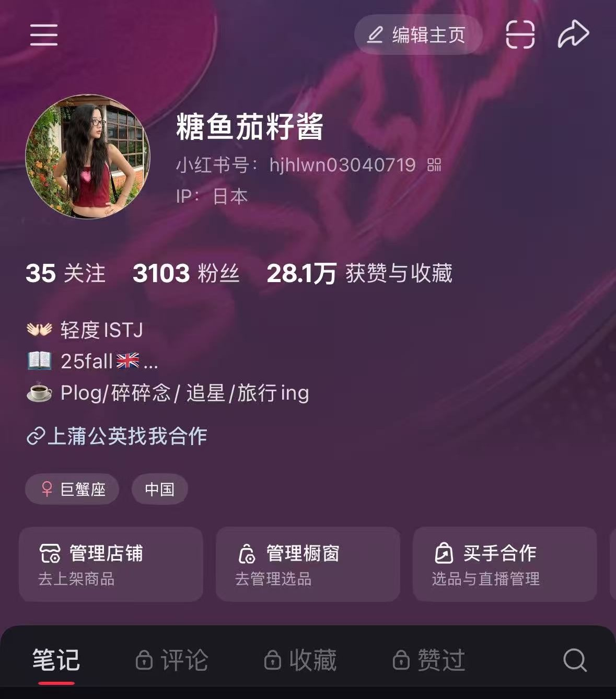
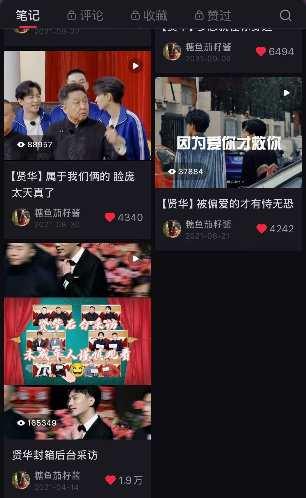
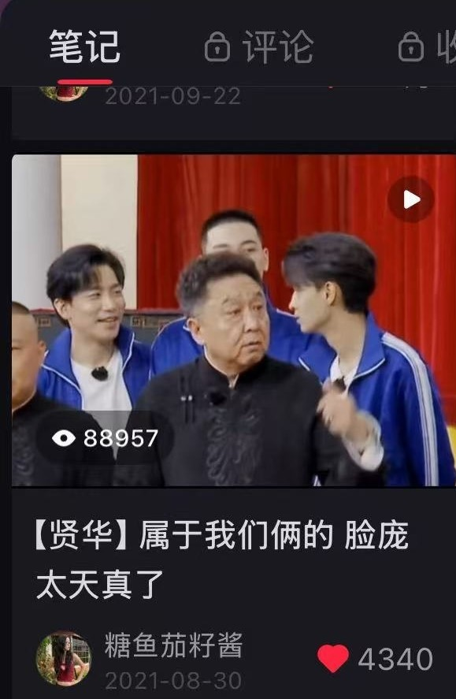
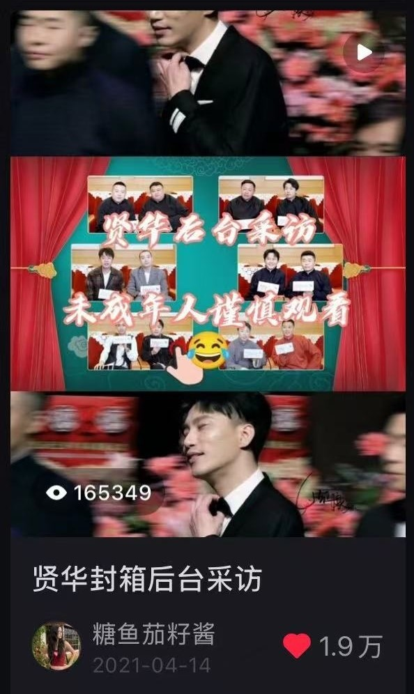
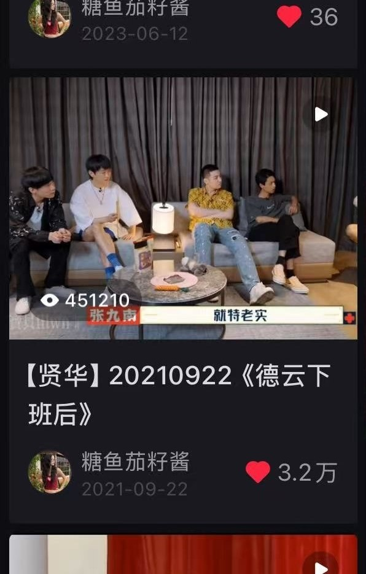
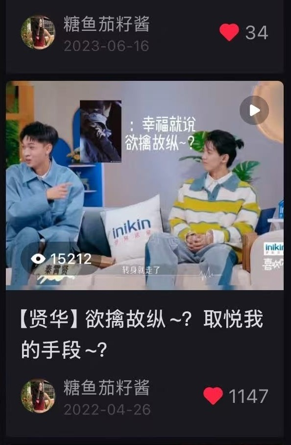

Newcastle University MSc graduate with hands-on experience in content operations, audience engagement and social media commercialization. Independently built and operated a Xiaohongshu account with 3,100+ followers, 280K+ likes & saves and 22 completed brand collaborations, covering study abroad, travel and lifestyle content.






Early-stage content focused on entertainment and fandom topics, combining content curation and video editing. This phase generated strong traffic performance, with peak content reaching 450K+ views, and helped me develop practical skills in trend spotting, content selection and audience engagement.
I later repositioned the account around my overseas study experience, European travel and lifestyle content, gradually transforming traffic-driven content into a more sustainable personal content identity.
Likes · 127 Saves · 16 Comments · 44 Shares
A personal travel story combining destination recommendations with visual storytelling.
Likes · 74 Saves · 14 Shares
Useful destination information was integrated with personal travel experience to encourage saves and sharing.
Experience integrating commercial messages into study-abroad, lifestyle and travel scenarios rather than treating sponsored posts as standalone advertisements.
Turned personal content creation into measurable commercial value through brand partnerships.
Identify what users care about and why they would click, save or share.
Turn user needs into topics, titles, visual hooks and content structures.
Create copy, images and short-form video content independently.
Observe engagement behaviour and use performance results to improve future content.